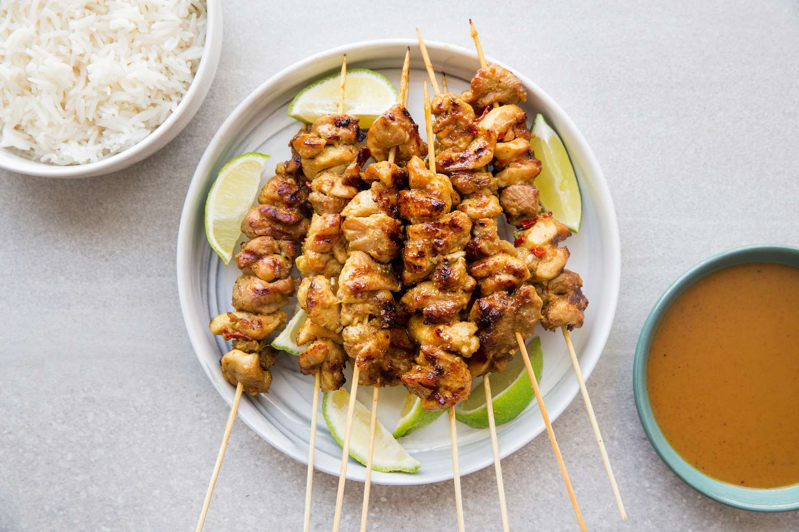

Satay with peanut sauce recipe

Flavorful Thai-style chicken skewers are topped with a sweet and spicy peanut sauce.
This is one of my favorite style to make satay. You can taste sweet and spicy, the smokiness will blend with juice of the chicken. Perfectly balance food to have with your family.
Indonesia have a lot of different skewer cuisine like this OG chicken satay. Another variant of skewers are Padang Satay, Taichan Satay, Kere Satay. but this one is THE BEST
Ingredients
- 3 tablespoons soy sauce
- 3 tablespoons tomato sauce
- 1 tablespoon peanut oil
- 2 cloves garlic, peeled and minced
- 1 pinch ground black pepper
- 1 pinch ground cumin
- 6 skinless, boneless chicken breast halves - cubed
- 1 tablespoon vegetable oil
- ¼ cup minced onion
- 1 clove garlic, peeled and minced
- 1 cup water
- 1/2 cup chunky peanut butter
- 2 tablespoons soy sauce
- 2 tablespoons white sugar
- 1 tablespoon lemon juice
- skewers
Steps
- In a bowl, mix soy sauce, tomato sauce, peanut oil, garlic, black pepper, and cumin. Place chicken into the mixture, and stir to coat. Cover, and marinate in the refrigerator for at least 15 minutes, but not overnight. This will make the meat too dark.
- Preheat the grill for high heat.
- Heat vegetable oil in a saucepan over medium heat, and saute onion and garlic until lightly browned. Mix in water, peanut butter, soy sauce, and sugar. Cook and stir until well blended. Remove from heat, mix in lemon juice, and set aside.
- Lightly oil the grill grate. Thread chicken onto skewers, and discard marinade. Grill skewers about 5 minutes per side, until chicken juices run clear. Serve with the peanut sauce.
Back to home